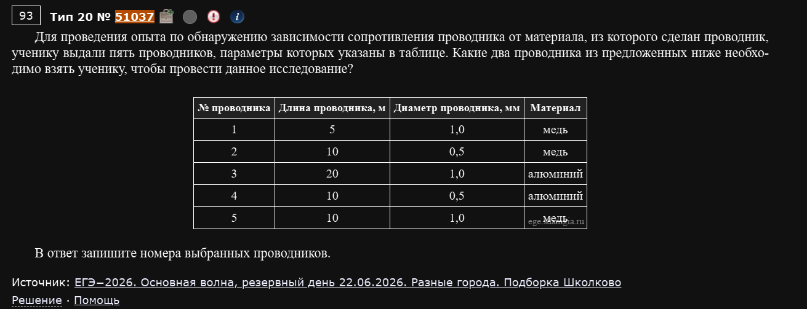
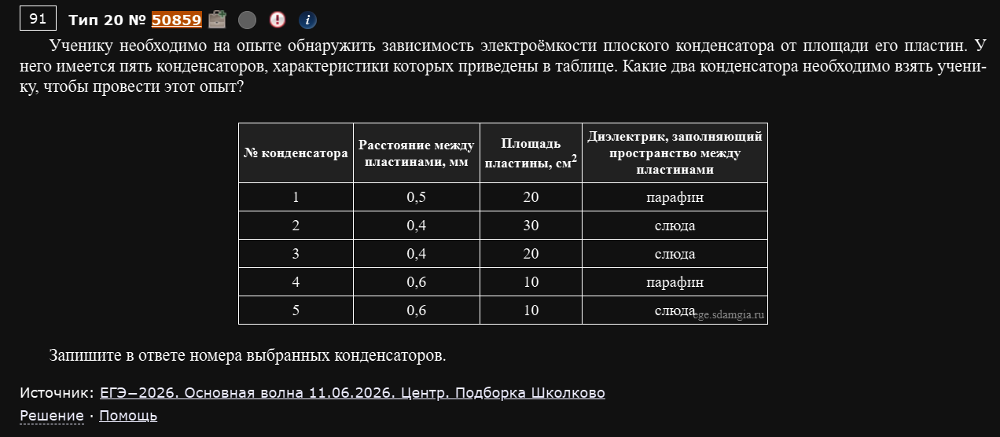
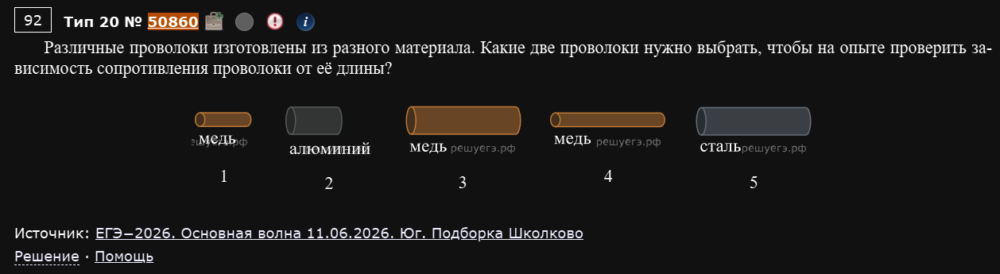
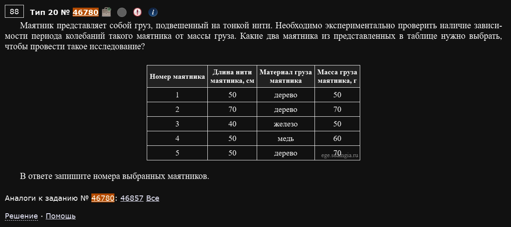
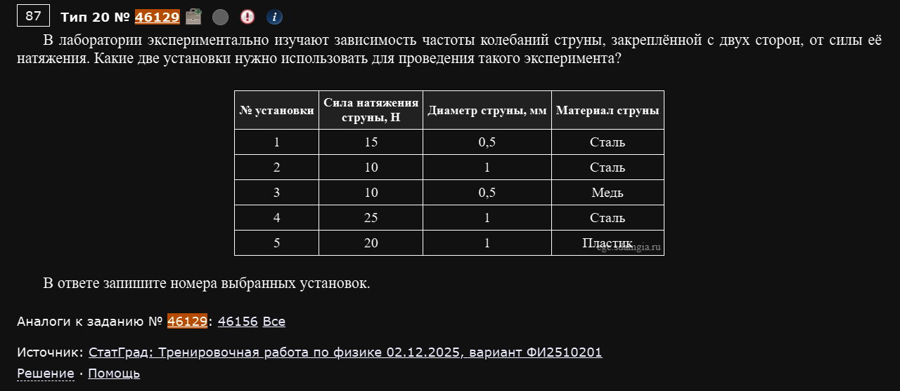

№20. Механика — квантовая физика. Планирование эксперимента
Совсем не похож на остальные номера: ни формул, ни вычислений. Есть гипотеза вида “величина Y зависит от величины X”, и из 5 предложенных установок/образцов нужно выбрать ровно два, которые можно честно сравнить между собой, чтобы проверить именно эту гипотезу.
Метод единственного отличия
Это ровно то же самое, что “контроль переменных” в любом школьном эксперименте: чтобы проверить зависимость Y от X, нужно взять два образца, у которых совпадают вообще все параметры, кроме X — тогда любая разница в Y можно списать только на X, а не на что-то ещё. Если в двух кандидатах отличается не только проверяемая величина, но и что-то ещё — пара не подходит, сколько бы она ни казалась похожей.
Пример 1) (Решу ЕГЭ №51037 — ЕГЭ-2026, основная волна, резервный день 22.06.2026, разные города, подборка Школково)

Для проведения опыта по обнаружению зависимости сопротивления проводника от материала, из которого сделан проводник, ученику выдали пять проводников, параметры которых указаны в таблице. Какие два проводника из предложенных ниже необходимо взять ученику, чтобы провести данное исследование?
| № проводника | Длина, м | Диаметр, мм | Материал |
|---|---|---|---|
| 1 | 5 | 1,0 | медь |
| 2 | 10 | 0,5 | медь |
| 3 | 20 | 1,0 | алюминий |
| 4 | 10 | 0,5 | алюминий |
| 5 | 10 | 1,0 | медь |
Проверяем зависимость от материала — значит, длина и диаметр должны совпадать у обоих проводников, а материал должен отличаться. Ищем совпадающую пару “длина+диаметр”: у проводника 2 (10 м, 0,5 мм) и проводника 4 (10 м, 0,5 мм) длина и диаметр одинаковы, а материал разный (медь и алюминий).
Ответ: 2 и 4.
Пример 2) (Решу ЕГЭ №50859 — ЕГЭ-2026, основная волна 11.06.2026, Центр, подборка Школково)

Ученику необходимо на опыте обнаружить зависимость электроёмкости плоского конденсатора от площади его пластин. У него имеется пять конденсаторов, характеристики которых приведены в таблице. Какие два конденсатора необходимо взять ученику, чтобы провести этот опыт?
| № конденсатора | Расстояние между пластинами, мм | Площадь пластины, см² | Диэлектрик |
|---|---|---|---|
| 1 | 0,5 | 20 | парафин |
| 2 | 0,4 | 30 | слюда |
| 3 | 0,4 | 20 | слюда |
| 4 | 0,6 | 10 | парафин |
| 5 | 0,6 | 10 | слюда |
Проверяем зависимость от площади пластин — значит, расстояние между пластинами и диэлектрик должны совпадать, а площадь должна отличаться. У конденсаторов 2 (0,4мм, слюда) и 3 (0,4мм, слюда) расстояние и диэлектрик одинаковы, площадь разная (30 и 20 см²).
Ответ: 2 и 3.
"Похожие" пары — самая частая ловушка
Конденсаторы 1 и 4 тоже отличаются площадью (20 и 10 см²) — но у них ЕЩЁ и разное расстояние между пластинами совпадает (оба 0,5 и… нет, у 1 это 0,5, у 4 это 0,6 — они разные), и диэлектрик тоже разный не всегда. Проверяйте КАЖДЫЙ параметр, кроме проверяемого, а не только один-два самых заметных — легко зацепиться взглядом за подходящую пару и не заметить, что третий параметр всё-таки отличается.
Пример 3) (Решу ЕГЭ №50860 — ЕГЭ-2026, основная волна 11.06.2026, Юг, подборка Школково)

Различные проволоки изготовлены из разного материала. Какие две проволоки нужно выбрать, чтобы на опыте проверить зависимость сопротивления проволоки от её длины?
На рисунке пять проволок разной длины, толщины и материала (медь, алюминий, медь, медь, сталь — под номерами 1-5). Проверяем зависимость от длины — значит, нужны две проволоки одного материала и одинаковой толщины (диаметра), но разной длины. Из трёх медных проволок (1, 3, 4) проволоки 1 и 4 имеют одинаковую (тонкую) толщину, а проволока 3 заметно толще — то есть подходящая пара именно 1 и 4: одинаковый материал (медь), одинаковая толщина, разная длина.
Ответ: 1 и 4.
Пример 4) (Решу ЕГЭ №46780)

Маятник представляет собой груз, подвешенный на тонкой нити. Необходимо экспериментально проверить наличие зависимости периода колебаний такого маятника от массы груза. Какие два маятника из представленных в таблице нужно выбрать, чтобы провести такое исследование?
| № маятника | Длина нити, см | Материал груза | Масса груза, г |
|---|---|---|---|
| 1 | 50 | дерево | 50 |
| 2 | 70 | дерево | 70 |
| 3 | 40 | железо | 50 |
| 4 | 50 | медь | 60 |
| 5 | 50 | дерево | 70 |
Проверяем зависимость от массы груза — значит, длина нити должна остаться той же (и, для чистоты сравнения, лучше не менять заодно и материал — мало ли, вдруг он тоже на что-то влияет). Маятники 1 (50см, дерево, 50г) и 5 (50см, дерево, 70г) совпадают по длине нити и материалу, отличаются только массой.
Ответ: 1 и 5.
Лишние переменные в таблице — это нормально, не пытайтесь их все "объяснить"
В этой задаче помимо длины нити и массы участвует ещё материал груза — казалось бы, зачем он вообще нужен, если период идеального математического маятника от материала (и даже от массы!) не зависит. Такие “лишние” столбцы в таблице — это не подсказка что-то посчитать, а просто дополнительные параметры, которые нужно держать одинаковыми у сравниваемой пары, наравне с длиной. Не нужно физически обосновывать, почему масса или материал не должны влиять — это как раз то, что и проверяет эксперимент.
Пример 5) (Решу ЕГЭ №46129 — СтатГрад: тренировочная работа по физике 02.12.2025, вариант ФИ2510201)

В лаборатории экспериментально изучают зависимость частоты колебаний струны, закреплённой с двух сторон, от силы её натяжения. Какие две установки нужно использовать для проведения такого эксперимента?
| № установки | Сила натяжения, Н | Диаметр струны, мм | Материал струны |
|---|---|---|---|
| 1 | 15 | 0,5 | Сталь |
| 2 | 10 | 1 | Сталь |
| 3 | 10 | 0,5 | Медь |
| 4 | 25 | 1 | Сталь |
| 5 | 20 | 1 | Пластик |
Проверяем зависимость от силы натяжения — нужны две струны одного материала и одного диаметра, с разной силой натяжения. Установки 2 (сталь, 1мм, 10Н) и 4 (сталь, 1мм, 25Н) совпадают по материалу и диаметру, отличаются только натяжением.
Ответ: 2 и 4.
Общий алгоритм для любого задания этого номера
- Найдите в условии, что именно является проверяемой величиной (X) — она указана явно в формулировке гипотезы (“зависимость… от…”).
- Выпишите (или отметьте на рисунке) все остальные параметры каждого образца.
- Ищите пару, где все параметры, кроме X, совпадают буква в букву (или пиксель в пиксель, если это рисунок) — а сам X различается.
- Если находится больше одной подходящей пары — перепроверьте, точно ли все “прочие” параметры совпадают у каждой; обычно правильная пара только одна.